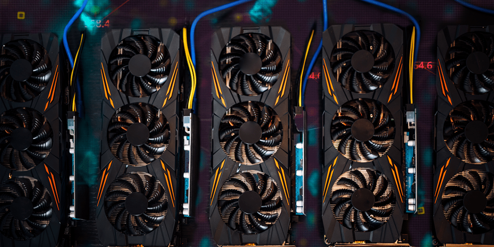

TOP10 TARJETAS GRÁFICAS 2023
A continuación se encuentran las 10 mejores tarjetas gráficas de acuerdo a su rendimiento y precio en enero de 2023:
-
1
Nvidia GeForce RTX 3080
La Nvidia GeForce RTX 3080 es una tarjeta gráfica de alto rendimiento diseñada para juegos y aplicaciones de realidad virtual. Lanzada en septiembre de 2020, es parte de la serie NVIDIA Ampere y cuenta con las siguientes características clave:
GPU: GA102 con 8704 núcleos CUDA
Frecuencia de reloj: hasta 1.71 GHz
Memoria: 10 GB de memoria GDDR6X
Ancho de banda de memoria: 760 GB/s
Soporte para Ray Tracing en tiempo real
Tecnología NVIDIA DLSS para mejorar la calidad gráfica en juegos
La GeForce RTX 3080 ofrece un rendimiento impresionante en resoluciones 4K y con la tecnología de Ray Tracing en tiempo real, permite a los jugadores disfrutar de una experiencia de juego más realista y detallada. También es compatible con la tecnología Nvidia Ampere Streaming Multiprocessors que permite un rendimiento de procesamiento más rápido y eficiente en comparación con tarjetas gráficas anteriores. -
2
Nvidia GeForce RTX 3070
La Nvidia GeForce RTX 3070 es una tarjeta gráfica de gama media-alta lanzada en octubre de 2020 como parte de la serie NVIDIA Ampere. Ofrece un rendimiento sorprendente a un precio más accesible en comparación con la RTX 3080 y cuenta con las siguientes características clave:
GPU: GA104 con 5888 núcleos CUDA
Frecuencia de reloj: hasta 1.73 GHz
Memoria: 8 GB de memoria GDDR6
Ancho de banda de memoria: 448 GB/s
Soporte para Ray Tracing en tiempo real
Tecnología NVIDIA DLSS para mejorar la calidad gráfica en juegos
La GeForce RTX 3070 ofrece una gran potencia para jugar juegos en resoluciones de hasta 1440p y con la tecnología de Ray Tracing en tiempo real, permite a los jugadores disfrutar de una experiencia de juego más realista y detallada. También es compatible con la tecnología Nvidia Ampere Streaming Multiprocessors que permite un rendimiento de procesamiento más rápido y eficiente en comparación con tarjetas gráficas anteriores. -
3
Nvidia GeForce RTX 3060 Ti
La Nvidia GeForce RTX 3060 Ti es una tarjeta gráfica de gama media lanzada en diciembre de 2020 como parte de la serie NVIDIA Ampere. Ofrece una combinación equilibrada de rendimiento y precio y cuenta con las siguientes características clave:
GPU: GA104 con 4864 núcleos CUDA
Frecuencia de reloj: hasta 1.67 GHz
Memoria: 8 GB de memoria GDDR6
Ancho de banda de memoria: 448 GB/s
Soporte para Ray Tracing en tiempo real
Tecnología NVIDIA DLSS para mejorar la calidad gráfica en juegos
La GeForce RTX 3060 Ti ofrece un rendimiento sorprendente para jugar juegos en resoluciones de hasta 1440p y con la tecnología de Ray Tracing en tiempo real, permite a los jugadores disfrutar de una experiencia de juego más realista y detallada. También es compatible con la tecnología Nvidia Ampere Streaming Multiprocessors que permite un rendimiento de procesamiento más rápido y eficiente en comparación con tarjetas gráficas anteriores. -
4
AMD Radeon RX 6800 XT
La AMD Radeon RX 6800 XT es una tarjeta gráfica de alto rendimiento lanzada en noviembre de 2020 como parte de la serie Radeon RDNA 2. Ofrece un rendimiento impresionante para jugar juegos en resoluciones 4K y cuenta con las siguientes características clave:
GPU: Navi 21 con 80 núcleos Compute Units
Frecuencia de reloj: hasta 2.25 GHz
Memoria: 16 GB de memoria GDDR6
Ancho de banda de memoria: 512 GB/s
Soporte para Ray Tracing en tiempo real
Tecnología FidelityFX para mejorar la calidad gráfica en juegos
La Radeon RX 6800 XT ofrece un rendimiento similar a la GeForce RTX 3080 de NVIDIA y es compatible con la tecnología AMD Infinity Fabric que permite una mayor velocidad y eficiencia en la comunicación entre los núcleos de la GPU. También es compatible con la tecnología RDNA 2 que permite una mayor eficiencia energética y una mayor velocidad de procesamiento en comparación con las tarjetas gráficas anteriores de AMD. -
5
AMD Radeon RX 6800
La AMD Radeon RX 6800 es una tarjeta gráfica de gama media-alta lanzada en noviembre de 2020 como parte de la serie Radeon RDNA 2. Ofrece un rendimiento impresionante para jugar juegos en resoluciones de hasta 1440p y cuenta con las siguientes características clave:
GPU: Navi 21 con 72 núcleos Compute Units
Frecuencia de reloj: hasta 2.15 GHz
Memoria: 16 GB de memoria GDDR6
Ancho de banda de memoria: 512 GB/s
Soporte para Ray Tracing en tiempo real
Tecnología FidelityFX para mejorar la calidad gráfica en juegos
La Radeon RX 6800 ofrece un rendimiento similar a la GeForce RTX 3070 de NVIDIA y es compatible con la tecnología AMD Infinity Fabric que permite una mayor velocidad y eficiencia en la comunicación entre los núcleos de la GPU. También es compatible con la tecnología RDNA 2 que permite una mayor eficiencia energética y una mayor velocidad de procesamiento en comparación con las tarjetas gráficas anteriores de AMD. -
6
Nvidia GeForce RTX 3090
La Nvidia GeForce RTX 3090 es una tarjeta gráfica de alto rendimiento lanzada en septiembre de 2020 como parte de la serie NVIDIA Ampere. Ofrece un rendimiento impresionante para jugar juegos en resoluciones 4K y cuenta con las siguientes características clave:
GPU: GA102 con 10496 núcleos CUDA
Frecuencia de reloj: hasta 1.70 GHz
Memoria: 24 GB de memoria GDDR6X
Ancho de banda de memoria: 936 GB/s
Soporte para Ray Tracing en tiempo real
Tecnología NVIDIA DLSS para mejorar la calidad gráfica en juegos
La GeForce RTX 3090 es la tarjeta gráfica más potente de NVIDIA y es ideal para jugar juegos en resoluciones 4K y para aplicaciones de rendimiento exigente, como la edición de video y la creación de contenido 3D. También es compatible con la tecnología Nvidia Ampere Streaming Multiprocessors que permite un rendimiento de procesamiento más rápido y eficiente en comparación con tarjetas gráficas anteriores. Además, cuenta con una gran cantidad de memoria, lo que permite manejar grandes cantidades de datos y almacenar texturas de alta resolución. -
7
Nvidia GeForce RTX 2080 Ti
La Nvidia GeForce RTX 2080 Ti es una tarjeta gráfica de alto rendimiento lanzada en septiembre de 2018 como parte de la serie NVIDIA Turing. Ofrece un rendimiento impresionante para jugar juegos en resoluciones 4K y cuenta con las siguientes características clave:
GPU: TU102 con 4352 núcleos CUDA
Frecuencia de reloj: hasta 1.35 GHz
Memoria: 11 GB de memoria GDDR6
Ancho de banda de memoria: 616 GB/s
Soporte para Ray Tracing en tiempo real
Tecnología NVIDIA DLSS para mejorar la calidad gráfica en juegos
La GeForce RTX 2080 Ti es una tarjeta gráfica potente que ofrece un rendimiento impresionante para jugar juegos en resoluciones 4K y para aplicaciones de rendimiento exigente, como la edición de video y la creación de contenido 3D. También es compatible con la tecnología NVIDIA Turing Streaming Multiprocessors que permite un rendimiento de procesamiento más rápido y eficiente en comparación con tarjetas gráficas anteriores. Además, cuenta con una gran cantidad de memoria, lo que permite manejar grandes cantidades de datos y almacenar texturas de alta resolución. -
8
Nvidia GeForce RTX 2070 Super
La Nvidia GeForce RTX 2070 Super es una tarjeta gráfica de alto rendimiento lanzada en julio de 2019 como parte de la serie NVIDIA Turing. Es una versión mejorada de la RTX 2070 original y ofrece un rendimiento impresionante para jugar juegos en resoluciones de 1440p y cuenta con las siguientes características clave:
GPU: TU104 con 2560 núcleos CUDA
Frecuencia de reloj: hasta 1.65 GHz
Memoria: 8 GB de memoria GDDR6
Ancho de banda de memoria: 448 GB/s
Soporte para Ray Tracing en tiempo real
Tecnología NVIDIA DLSS para mejorar la calidad gráfica en juegos
La GeForce RTX 2070 Super es una tarjeta gráfica potente que ofrece un rendimiento impresionante para jugar juegos en resoluciones de 1440p y para aplicaciones de rendimiento moderado, como la edición de video y la creación de contenido 3D. También es compatible con la tecnología NVIDIA Turing Streaming Multiprocessors que permite un rendimiento de procesamiento más rápido y eficiente en comparación con tarjetas gráficas anteriores. La RTX 2070 Super es una buena opción para aquellos que buscan una tarjeta gráfica potente con una relación precio-rendimiento atractiva. -
9
AMD Radeon RX 5700 XT
La AMD Radeon RX 5700 XT es una tarjeta gráfica de alto rendimiento lanzada en julio de 2019 como parte de la serie Radeon RX 5000. Ofrece un rendimiento impresionante para jugar juegos en resoluciones de 1440p y cuenta con las siguientes características clave:
GPU: Navi 10 con 2560 núcleos Stream
Frecuencia de reloj: hasta 1.7 GHz
Memoria: 8 GB de memoria GDDR6
Ancho de banda de memoria: 448 GB/s
Soporte para Ray Tracing de hardware
Tecnología AMD RDNA para mejorar el rendimiento y la eficiencia energética
La Radeon RX 5700 XT es una tarjeta gráfica potente que ofrece un rendimiento impresionante para jugar juegos en resoluciones de 1440p y para aplicaciones de rendimiento moderado, como la edición de video y la creación de contenido 3D. Con su soporte para Ray Tracing de hardware y su tecnología AMD RDNA, ofrece un rendimiento de juego fluido y detallado, además de una eficiencia energética mejorada en comparación con tarjetas gráficas anteriores. La Radeon RX 5700 XT es una buena opción para aquellos que buscan una tarjeta gráfica potente con una relación precio-rendimiento atractiva. -
10
Nvidia GeForce RTX 2060 Super
La Nvidia GeForce RTX 2060 Super es una tarjeta gráfica de alto rendimiento lanzada en julio de 2019 como parte de la serie NVIDIA Turing. Es una versión mejorada de la RTX 2060 original y ofrece un rendimiento impresionante para jugar juegos en resoluciones de 1080p y 1440p y cuenta con las siguientes características clave:
GPU: TU106 con 2176 núcleos CUDA
Frecuencia de reloj: hasta 1.6 GHz
Memoria: 8 GB de memoria GDDR6
Ancho de banda de memoria: 448 GB/s
Soporte para Ray Tracing en tiempo real
Tecnología NVIDIA DLSS para mejorar la calidad gráfica en juegos
La GeForce RTX 2060 Super es una tarjeta gráfica potente que ofrece un rendimiento impresionante para jugar juegos en resoluciones de 1080p y 1440p y para aplicaciones de rendimiento moderado, como la edición de video y la creación de contenido 3D. También es compatible con la tecnología NVIDIA Turing Streaming Multiprocessors que permite un rendimiento de procesamiento más rápido y eficiente en comparación con tarjetas gráficas anteriores. La RTX 2060 Super es una buena opción para aquellos que buscan una tarjeta gráfica potente con una relación precio-rendimiento atractiva y un rendimiento adecuado para jugar juegos en resoluciones más altas.
Nota: Esta lista, aunque trabajamos para mantenerla actualizada, puede variar con el tiempo, por lo que siempre incluimos fechas de referencia, y depende de la disponibilidad de las tarjetas en el mercado, así como de cambios en el rendimiento y precios.
Recorda: La mejor tarjeta gráfica es la que mejor se adapta a tus necesidades especificas.